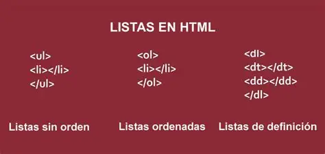

Listas de definicion

Diccionario de terminos de aerodinamica en el mundo del deporte motor
silla
asiento de descanso y comodidad
pasto
una planta que normalmente esta en la tierra es inofencivo al tocarlo
pala
herramienta de trabajo